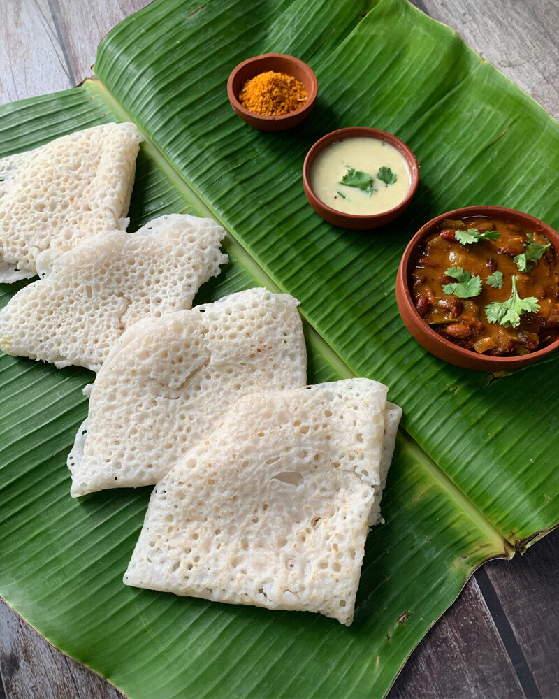

Neer Dosa

Ingredients
- 1/3 cup raw rice, soaked for 4 hours and drained
- Salt to taste
- Oil for greasing
Method
- To make Neer Dosa, combine the drained raw rice and 1/2 cup of water in a mixer and blend till smooth.
- Transfer the mixture into a deep bowl, add 1 to 1/2 cups of water and salt and mix well.
- Heat a non-stick tawa (griddle) till red hot, sprinkle a little water on the tawa (griddle) and wipe it off gently using a muslin cloth.
- Grease the tawa (griddle) with a little oil and smear it by using a cut onion.
- Pour approx. 1/3 cup (approx. 5 tbsp) of the batter on it and tilt the tawa (griddle) in a circular motion to make a round dosa.
- Cover with a lid and cook on a medium flame for 1 minute. Fold the dosa into a triangle.
- Repeat with the remaining batter to make 9 more dosas.
- Serve Neer Dosa immediately with chutney.